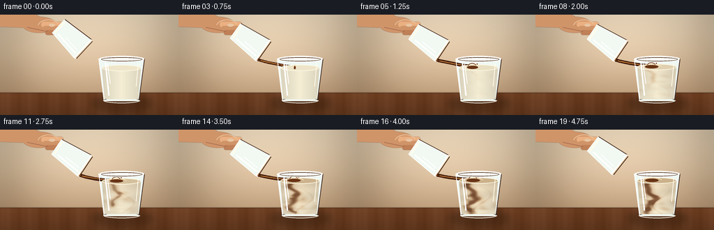
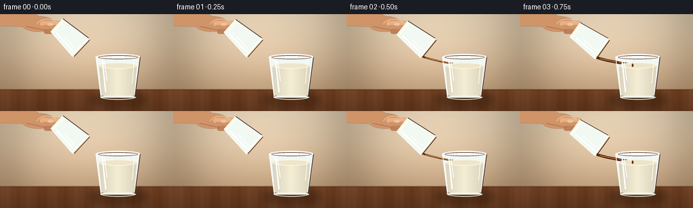
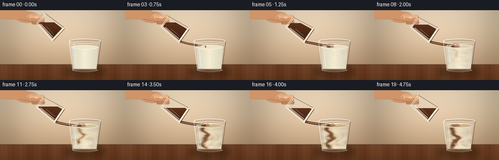

CODING AGENTS AS PIXEL WORLD MODELS
traex/GPT-5.6-Sol · material_0021
点击播放 · 原生 RGB 像素
逐轮保存的候选
回放视频、检查图与代码变化。
每份候选均可单独播放。实际图片检查记录在下方工具轨迹中。
候选 01播放与检查图
点击播放 · 原生 RGB 像素

展开代码变化
--- 上一保存版本
+++ 本次保存版本
@@ -0,0 +1,264 @@
+from pathlib import Path
+import math
+import numpy as np
+from PIL import Image, ImageDraw, ImageFilter
+import artifact_io
+
+W,H,N = 256,144,20
+S=4
+WW,HH=W*S,H*S
+RES=Image.Resampling.LANCZOS
+rng=np.random.default_rng(21)
+
+def scpts(points): return [(int(x*S),int(y*S)) for x,y in points]
+def bbox(b): return tuple(int(v*S) for v in b)
+def ease(x):
+ x=np.clip(x,0,1); return x*x*(3-2*x)
+def rotpt(x,y,cx,cy,a):
+ ca,sa=math.cos(a),math.sin(a)
+ return (cx+x*ca-y*sa, cy+x*sa+y*ca)
+def transform(poly,cx,cy,a): return [rotpt(x,y,cx,cy,a) for x,y in poly]
+def bezier(p0,p1,p2,n=32):
+ ts=np.linspace(0,1,n)
+ return [((1-t)**2*p0[0]+2*(1-t)*t*p1[0]+t*t*p2[0],
+ (1-t)**2*p0[1]+2*(1-t)*t*p1[1]+t*t*p2[1]) for t in ts]
+
+def background(i):
+ y,x=np.mgrid[0:HH,0:WW]/S
+ # warm cafe wall with cinematic vignette
+ top=np.array([224,205,177.],float); bot=np.array([184,151,116.],float)
+ q=np.clip(y/125,0,1)[...,None]
+ arr=top*(1-q)+bot*q
+ glow=np.exp(-((x-126)**2/(2*85**2)+(y-43)**2/(2*48**2)))[...,None]
+ arr += 19*glow
+ # quiet out-of-focus vertical shapes
+ arr -= 8*np.exp(-((x-18)/28)**2)[...,None]
+ arr -= 6*np.exp(-((x-242)/22)**2)[...,None]
+ vign=1-0.13*((x-W/2)/(W/2))**2-0.07*((y-H/2)/(H/2))**2
+ arr*=vign[...,None]
+ # wood table
+ table=y>=112
+ wood=np.zeros_like(arr)
+ woodbase=np.array([111,66,38.])
+ grain=4*np.sin(x*.18)+2*np.sin(x*.047+1.2)+1.3*np.sin(x*.63)
+ wood[:]=woodbase+grain[...,None]
+ shade=np.clip((y-112)/32,0,1)[...,None]
+ wood*=1-.16*shade
+ arr=np.where(table[...,None],wood,arr)
+ # seam and subtle texture
+ arr[(y>=111)&(y<113)]*=.82
+ noise=rng.normal(0,.65,(HH,WW,1))
+ arr+=noise
+ return Image.fromarray(np.uint8(np.clip(arr,0,255)),'RGB').convert('RGBA')
+
+def ellipse_blur(canvas, b, fill, blur):
+ lay=Image.new('RGBA',(WW,HH)); d=ImageDraw.Draw(lay)
+ d.ellipse(bbox(b),fill=fill)
+ if blur: lay=lay.filter(ImageFilter.GaussianBlur(blur*S))
+ canvas.alpha_composite(lay)
+
+def draw_target_base(im,i):
+ # shadow on wood
+ ellipse_blur(im,(132,117,218,137),(45,23,10,85),5)
+ d=ImageDraw.Draw(im,'RGBA')
+ # rear glass body and transparent cavity
+ d.polygon(scpts([(141.5,63),(207,63),(199,124),(149,124)]),fill=(236,244,240,28))
+ d.line(scpts([(141.5,63),(149,124)]),fill=(244,250,247,115),width=1*S)
+ d.line(scpts([(207,63),(199,124)]),fill=(92,73,59,105),width=1*S)
+ d.ellipse(bbox((142,59,207,68)),fill=(248,250,245,30),outline=(255,255,250,142),width=S)
+ d.ellipse(bbox((145,61,204,67)),outline=(103,81,65,92),width=S)
+ d.arc(bbox((148,119,201,127)),0,180,fill=(245,248,239,130),width=S)
+ d.arc(bbox((148,119,201,127)),180,360,fill=(74,54,43,95),width=S)
+
+def milk_texture(i):
+ # pouring progress / raised fluid level
+ p=ease((i-2)/14)
+ ytop=76-3.3*p
+ Y,X=np.mgrid[0:HH,0:WW]/S
+ # interior mask at high resolution
+ mask=Image.new('L',(WW,HH)); md=ImageDraw.Draw(mask)
+ md.polygon(scpts([(146,ytop),(202,ytop),(198,121),(150,121)]),fill=255)
+ md.ellipse(bbox((146,ytop-4,202,ytop+5)),fill=255)
+ m=np.asarray(mask,dtype=float)/255
+ # milk base becomes cafe au lait, slowly and unevenly
+ base=np.zeros((HH,WW,4),float)
+ milk=np.array([242,235,211.]); latte=np.array([199,153,105.]); coffee=np.array([74,35,18.])
+ yy=(Y-ytop)/max(1,121-ytop)
+ phase=i*.48
+ # concentration field: descending central plume plus top pool and rotating eddies
+ c=.05*p + .23*p*(1-np.clip(yy,0,1))
+ plume_x=164.5 + 5.5*np.sin((Y-ytop)*.19-phase*.38) + 2*np.sin((Y-ytop)*.43+phase)
+ reached=ytop+5+44*p
+ plume=np.exp(-((X-plume_x)/(2.0+4.3*p))**2)*np.exp(-np.maximum(Y-reached,0)**2/18)
+ plume*=np.clip((Y-ytop+2)/7,0,1)*np.clip((reached+6-Y)/8,0,1)
+ c += .72*p*plume
+ # curved cloudy eddies on both sides
+ for cx,cy,sx,sy,amp,wig in [
+ (174+8*np.sin(phase*.55),88+10*p,13,6,.34,1),
+ (158+4*np.cos(phase*.7),101+8*p,11,7,.30,-1),
+ (188-4*np.sin(phase*.42),108,14,8,.24,1),
+ (177,117,18,5,.17,-1)]:
+ dx=(X-cx)/sx; dy=(Y-cy)/sy
+ ring=np.exp(-((np.sqrt(dx*dx+dy*dy)-.75)**2)/.12)
+ wave=.55+.45*np.sin(np.arctan2(dy,dx)*2.4+phase*wig)
+ c += p*amp*ring*wave
+ # fine tendrils
+ tendx=180+12*np.sin((Y-ytop)*.14+phase*.65)
+ tend=np.exp(-((X-tendx)/1.7)**2)*np.exp(-((Y-(ytop+24+12*p))/24)**2)
+ c += .2*p*tend
+ c=np.clip(c,0,.92)*m
+ # upper portion richer; color field with soft highlights
+ rgb=milk[None,None,:]*(1-c[...,None]) + latte[None,None,:]*c[...,None]
+ dark=np.clip((c-.48)*1.35,0,.65)
+ rgb=rgb*(1-dark[...,None])+coffee[None,None,:]*dark[...,None]
+ # glass/milk shading: dark edges, central reflection, subtle waves
+ edge=np.clip(np.abs(X-174)/30,0,1)
+ rgb*= (1-.12*edge[...,None]*m[...,None])
+ rgb += (5*np.sin(Y*.34+X*.05+phase)*p*m)[...,None]
+ base[...,:3]=rgb; base[...,3]=m*255
+ layer=Image.fromarray(np.uint8(np.clip(base,0,255)),'RGBA')
+ return layer,ytop,p
+
+def draw_target_front(im,i,ytop,p):
+ d=ImageDraw.Draw(im,'RGBA')
+ # surface ellipse, still creamy at edge with coffee landing stain
+ surf=(235-34*p,226-50*p,200-62*p,245)
+ d.ellipse(bbox((146,ytop-4,202,ytop+5)),fill=tuple(map(int,surf)),outline=(249,244,224,210),width=S)
+ if i>=3:
+ a=ease((i-2)/4)
+ cx=166+1.0*math.sin(i*.8)
+ d.ellipse(bbox((cx-9*a,ytop-2.3,cx+10*a,ytop+2.3)),fill=(105,54,25,int(130*a)))
+ d.arc(bbox((cx-13*a,ytop-4,cx+15*a,ytop+5)),180,350,fill=(247,223,184,int(170*a)),width=S)
+ # tiny impact crown and droplets during full pour
+ if 5<=i<=16:
+ d.arc(bbox((cx-6,ytop-6,cx+6,ytop+2)),185,345,fill=(119,64,30,190),width=S)
+ d.ellipse(bbox((cx+6.5,ytop-5.5,cx+8,ytop-4)),fill=(111,57,27,180))
+ # front glass overlays and specular highlights
+ d.line(scpts([(141.5,64),(149,123)]),fill=(255,255,250,165),width=S)
+ d.line(scpts([(207,64),(199,123)]),fill=(69,48,37,110),width=S)
+ d.line(scpts([(148,123),(200,123)]),fill=(236,236,222,125),width=S)
+ d.line(scpts([(151,69),(156,116)]),fill=(255,255,255,88),width=2*S)
+ d.line(scpts([(154,70),(158,99)]),fill=(255,255,255,74),width=S)
+ d.line(scpts([(198,70),(195,103)]),fill=(255,248,230,48),width=S)
+ # crisp rim in front
+ d.arc(bbox((142,59,207,68)),0,180,fill=(255,255,250,112),width=S)
+ d.arc(bbox((142,59,207,68)),180,360,fill=(255,255,252,210),width=S)
+ d.arc(bbox((145,61,204,67)),180,360,fill=(101,72,53,105),width=S)
+
+def draw_hand(im,i,cx,cy,ang):
+ # hand enters from top left and naturally wraps the pouring glass
+ lay=Image.new('RGBA',(WW,HH)); d=ImageDraw.Draw(lay,'RGBA')
+ skin=(206,148,106,255); light=(231,175,130,255); shadow=(151,93,66,220)
+ d.polygon(scpts([(-8,-4),(44,-4),(77,13),(72,28),(39,19),(-8,17)]),fill=skin)
+ d.ellipse(bbox((32,3,81,26)),fill=skin)
+ # fingers around base
+ d.rounded_rectangle(bbox((59,10,91,18)),radius=4*S,fill=light)
+ d.rounded_rectangle(bbox((61,16,91,24)),radius=4*S,fill=skin)
+ d.rounded_rectangle(bbox((65,22,92,29)),radius=3*S,fill=(190,128,89,255))
+ d.arc(bbox((54,7,85,26)),190,335,fill=(247,196,150,170),width=S)
+ d.line(scpts([(39,18),(68,24)]),fill=shadow,width=S)
+ d.ellipse(bbox((70,13,79,17)),fill=(247,194,151,100))
+ lay=lay.filter(ImageFilter.GaussianBlur(.18*S))
+ im.alpha_composite(lay)
+
+def draw_pourer(im,i):
+ # minute controlled lowering, then easing back at the end
+ start=ease(i/4)
+ end=ease((i-16)/3)
+ cx=119+2.2*start-1.0*end; cy=49+2.5*start-1.5*end
+ angle=math.radians(-47-9*start+4*end)
+ # hand behind vessel
+ draw_hand(im,i,cx,cy,angle)
+ body=transform([(-18,0),(18,0),(13,-48),(-13,-48)],cx,cy,angle)
+ inside=transform([(-14,-2),(14,-2),(10,-45),(-10,-45)],cx,cy,angle)
+ # liquid clipped to glass interior, horizontal level recedes as pouring proceeds
+ mask=Image.new('L',(WW,HH)); ImageDraw.Draw(mask).polygon(scpts(inside),fill=255)
+ p=ease((i-2)/14)
+ Y,X=np.mgrid[0:HH,0:WW]/S
+ level=23.5+12*p
+ interior=np.asarray(mask)/255
+ lm=interior*(Y>=level)
+ arr=np.zeros((HH,WW,4),dtype=np.uint8)
+ depth=np.clip((Y-level)/28,0,1)
+ arr[...,0]=np.clip(87-26*depth,0,255).astype(np.uint8)
+ arr[...,1]=np.clip(45-17*depth,0,255).astype(np.uint8)
+ arr[...,2]=np.clip(22-8*depth,0,255).astype(np.uint8)
+ arr[...,3]=(lm*242).astype(np.uint8)
+ liq=Image.fromarray(arr,'RGBA')
+ # warm transmitted glow on coffee edge
+ im.alpha_composite(liq)
+ d=ImageDraw.Draw(im,'RGBA')
+ # translucent glass body and outlines
+ d.polygon(scpts(body),fill=(239,245,240,26))
+ left=transform([(-18,0),(-13,-48)],cx,cy,angle)
+ right=transform([(18,0),(13,-48)],cx,cy,angle)
+ bottom=transform([(-13,-48),(13,-48)],cx,cy,angle)
+ d.line(scpts(left),fill=(250,253,248,205),width=S)
+ d.line(scpts(right),fill=(76,52,38,150),width=S)
+ d.line(scpts(bottom),fill=(246,247,238,190),width=S)
+ # highlights
+ h1=transform([(-12,-3),(-9,-40)],cx,cy,angle)
+ d.line(scpts(h1),fill=(255,255,249,145),width=2*S)
+ h2=transform([(-7,-5),(-5,-29)],cx,cy,angle)
+ d.line(scpts(h2),fill=(255,255,255,75),width=S)
+ # bottom thickness
+ d.line(scpts(transform([(-11,-45),(11,-45)],cx,cy,angle)),fill=(255,250,230,105),width=2*S)
+ # mouth ellipse suggested with layered tilted segments
+ a=rotpt(-18,0,cx,cy,angle); b=rotpt(18,0,cx,cy,angle)
+ a2=rotpt(-17,2.7,cx,cy,angle); b2=rotpt(17,2.7,cx,cy,angle)
+ d.line(scpts([a,b]),fill=(255,255,248,220),width=2*S)
+ d.line(scpts([a2,b2]),fill=(71,42,26,190),width=S)
+ d.line(scpts([a,a2]),fill=(255,255,255,170),width=S)
+ return cx,cy,angle
+
+def draw_stream(im,i,cx,cy,angle,ytop):
+ # appears after tilt, remains continuous, and tapers before final frame
+ onset=ease((i-1)/3)
+ cutoff=1-ease((i-16)/3)
+ strength=onset*cutoff
+ if strength<.03: return
+ start=rotpt(-15,2.2,cx,cy,angle)
+ impact=(165.5+1.1*math.sin(i*.62),ytop-1)
+ ctrl=((start[0]+impact[0])/2+2.5*math.sin(i*.43),
+ start[1]+7+1.2*math.sin(i*.7))
+ pts=bezier(start,ctrl,impact,45)
+ # subtle living wave without breaking stream
+ waved=[]
+ for k,(x,y) in enumerate(pts):
+ t=k/(len(pts)-1)
+ x += strength*.65*math.sin(i*.9+t*9)*math.sin(math.pi*t)
+ waved.append((x,y))
+ d=ImageDraw.Draw(im,'RGBA')
+ width=max(S,int((2.0+2.8*strength)*S))
+ d.line(scpts(waved),fill=(70,34,17,238),width=width,joint='curve')
+ d.line(scpts([(x-.65,y) for x,y in waved]),fill=(173,98,46,145),width=max(S,int(width*.28)))
+ d.line(scpts([(x+.9,y) for x,y in waved]),fill=(39,19,11,120),width=max(S,int(width*.18)))
+ # bright glint running along stream
+ gl=bezier(waved[3],waved[len(waved)//2],waved[-4],30)
+ d.line(scpts(gl),fill=(225,151,77,60),width=S)
+ if i in (3,4,17):
+ t=.55
+ q=bezier(start,ctrl,impact,20)[11]
+ d.ellipse(bbox((q[0]-1.4,q[1]-1.4,q[0]+1.4,q[1]+1.4)),fill=(106,52,24,220))
+
+def render(i):
+ im=background(i)
+ draw_target_base(im,i)
+ milk,ytop,p=milk_texture(i)
+ im.alpha_composite(milk)
+ cx,cy,a=draw_pourer(im,i)
+ draw_stream(im,i,cx,cy,a,ytop)
+ draw_target_front(im,i,ytop,p)
+ # cinematic foreground warmth and final downsample
+ rgb=im.convert('RGB').resize((W,H),RES)
+ arr=np.asarray(rgb,dtype=np.float32)
+ # mild filmic contrast
+ arr=(arr-128)*1.035+128
+ return np.uint8(np.clip(arr,0,255))
+
+def main():
+ frames=np.stack([render(i) for i in range(N)])
+ artifact_io.save(frames,Path(__file__).resolve().parent)
+ print('saved',frames.shape,frames.dtype)
+
+if __name__=='__main__': main()
候选 02播放与检查图
点击播放 · 原生 RGB 像素


展开代码变化
--- 上一保存版本
+++ 本次保存版本
@@ -8,7 +8,6 @@
S=4
WW,HH=W*S,H*S
RES=Image.Resampling.LANCZOS
-rng=np.random.default_rng(21)
def scpts(points): return [(int(x*S),int(y*S)) for x,y in points]
def bbox(b): return tuple(int(v*S) for v in b)
@@ -47,7 +46,8 @@
arr=np.where(table[...,None],wood,arr)
# seam and subtle texture
arr[(y>=111)&(y<113)]*=.82
- noise=rng.normal(0,.65,(HH,WW,1))
+ # fixed sensor-like texture (not frame-to-frame flicker)
+ noise=np.random.default_rng(21).normal(0,.65,(HH,WW,1))
arr+=noise
return Image.fromarray(np.uint8(np.clip(arr,0,255)),'RGB').convert('RGBA')
@@ -60,7 +60,7 @@
def draw_target_base(im,i):
# shadow on wood
ellipse_blur(im,(132,117,218,137),(45,23,10,85),5)
- d=ImageDraw.Draw(im,'RGBA')
+ lay=Image.new('RGBA',(WW,HH)); d=ImageDraw.Draw(lay,'RGBA')
# rear glass body and transparent cavity
d.polygon(scpts([(141.5,63),(207,63),(199,124),(149,124)]),fill=(236,244,240,28))
d.line(scpts([(141.5,63),(149,124)]),fill=(244,250,247,115),width=1*S)
@@ -69,6 +69,7 @@
d.ellipse(bbox((145,61,204,67)),outline=(103,81,65,92),width=S)
d.arc(bbox((148,119,201,127)),0,180,fill=(245,248,239,130),width=S)
d.arc(bbox((148,119,201,127)),180,360,fill=(74,54,43,95),width=S)
+ im.alpha_composite(lay)
def milk_texture(i):
# pouring progress / raised fluid level
@@ -120,7 +121,7 @@
return layer,ytop,p
def draw_target_front(im,i,ytop,p):
- d=ImageDraw.Draw(im,'RGBA')
+ lay=Image.new('RGBA',(WW,HH)); d=ImageDraw.Draw(lay,'RGBA')
# surface ellipse, still creamy at edge with coffee landing stain
surf=(235-34*p,226-50*p,200-62*p,245)
d.ellipse(bbox((146,ytop-4,202,ytop+5)),fill=tuple(map(int,surf)),outline=(249,244,224,210),width=S)
@@ -144,6 +145,7 @@
d.arc(bbox((142,59,207,68)),0,180,fill=(255,255,250,112),width=S)
d.arc(bbox((142,59,207,68)),180,360,fill=(255,255,252,210),width=S)
d.arc(bbox((145,61,204,67)),180,360,fill=(101,72,53,105),width=S)
+ im.alpha_composite(lay)
def draw_hand(im,i,cx,cy,ang):
# hand enters from top left and naturally wraps the pouring glass
@@ -171,11 +173,16 @@
draw_hand(im,i,cx,cy,angle)
body=transform([(-18,0),(18,0),(13,-48),(-13,-48)],cx,cy,angle)
inside=transform([(-14,-2),(14,-2),(10,-45),(-10,-45)],cx,cy,angle)
+ # translucent glass tint first, then liquid clipped inside it; this order keeps
+ # the coffee visibly brown instead of washing it out with the glass overlay.
+ shell=Image.new('RGBA',(WW,HH)); sd=ImageDraw.Draw(shell,'RGBA')
+ sd.polygon(scpts(body),fill=(232,243,241,22))
+ im.alpha_composite(shell)
# liquid clipped to glass interior, horizontal level recedes as pouring proceeds
mask=Image.new('L',(WW,HH)); ImageDraw.Draw(mask).polygon(scpts(inside),fill=255)
p=ease((i-2)/14)
Y,X=np.mgrid[0:HH,0:WW]/S
- level=23.5+12*p
+ level=25.0+12*p
interior=np.asarray(mask)/255
lm=interior*(Y>=level)
arr=np.zeros((HH,WW,4),dtype=np.uint8)
@@ -188,8 +195,8 @@
# warm transmitted glow on coffee edge
im.alpha_composite(liq)
d=ImageDraw.Draw(im,'RGBA')
- # translucent glass body and outlines
- d.polygon(scpts(body),fill=(239,245,240,26))
+ # glass outlines and highlights on a separate alpha layer
+ detail=Image.new('RGBA',(WW,HH)); d=ImageDraw.Draw(detail,'RGBA')
left=transform([(-18,0),(-13,-48)],cx,cy,angle)
right=transform([(18,0),(13,-48)],cx,cy,angle)
bottom=transform([(-13,-48),(13,-48)],cx,cy,angle)
@@ -209,6 +216,7 @@
d.line(scpts([a,b]),fill=(255,255,248,220),width=2*S)
d.line(scpts([a2,b2]),fill=(71,42,26,190),width=S)
d.line(scpts([a,a2]),fill=(255,255,255,170),width=S)
+ im.alpha_composite(detail)
return cx,cy,angle
def draw_stream(im,i,cx,cy,angle,ytop):
@@ -228,7 +236,7 @@
t=k/(len(pts)-1)
x += strength*.65*math.sin(i*.9+t*9)*math.sin(math.pi*t)
waved.append((x,y))
- d=ImageDraw.Draw(im,'RGBA')
+ lay=Image.new('RGBA',(WW,HH)); d=ImageDraw.Draw(lay,'RGBA')
width=max(S,int((2.0+2.8*strength)*S))
d.line(scpts(waved),fill=(70,34,17,238),width=width,joint='curve')
d.line(scpts([(x-.65,y) for x,y in waved]),fill=(173,98,46,145),width=max(S,int(width*.28)))
@@ -240,6 +248,7 @@
t=.55
q=bezier(start,ctrl,impact,20)[11]
d.ellipse(bbox((q[0]-1.4,q[1]-1.4,q[0]+1.4,q[1]+1.4)),fill=(106,52,24,220))
+ im.alpha_composite(lay)
def render(i):
im=background(i)
候选 03播放与检查图

可观测工具轨迹
实际执行的命令与返回图片。
命令 1exit 0
/bin/bash -lc "cat prompt.txt && printf '\\n--- GENERATION_RULES ---\\n' && cat GENERATION_RULES.md && printf '\\n--- TASK_SPEC ---\\n' && cat task_spec.json"
命令 2exit 1
/bin/bash -lc "find . -maxdepth 3 -type f -printf '%p\\n' | sort && printf '\\n--- tools ---\\n' && command -v ffmpeg && command -v python3 && (command -v convert || true) && (command -v blender || true)"
命令 3exit 0
/bin/bash -lc "cat artifact_io.py && python3 - <<'PY' import sys for m in ['numpy','PIL','imageio','cv2']: try: x=__import__(m); print(m,'OK',getattr(x,'__version__','')) except Exception as e: print(m,e) PY"
命令 4exit 0
/bin/bash -lc "cat > generate.py <<'PY'
from pathlib import Path
import math
import numpy as np
from PIL import Image, ImageDraw, ImageFilter
import artifact_io
W,H,N = 256,144,20
S=4
WW,HH=W*S,H*S
RES=Image.Resampling.LANCZOS
rng=np.random.default_rng(21)
def scpts(points): return [(int(x*S),int(y*S)) for x,y in points]
def bbox(b): return tuple(int(v*S) for v in b)
def ease(x):
x=np.clip(x,0,1); return x*x*(3-2*x)
def rotpt(x,y,cx,cy,a):
ca,sa=math.cos(a),math.sin(a)
return (cx+x*ca-y*sa, cy+x*sa+y*ca)
def transform(poly,cx,cy,a): return [rotpt(x,y,cx,cy,a) for x,y in poly]
def bezier(p0,p1,p2,n=32):
ts=np.linspace(0,1,n)
return [((1-t)**2*p0[0]+2*(1-t)*t*p1[0]+t*t*p2[0],
(1-t)**2*p0[1]+2*(1-t)*t*p1[1]+t*t*p2[1]) for t in ts]
def background(i):
y,x=np.mgrid[0:HH,0:WW]/S
# warm cafe wall with cinematic vignette
top=np.array([224,205,177.],float); bot=np.array([184,151,116.],float)
q=np.clip(y/125,0,1)[...,None]
arr=top*(1-q)+bot*q
glow=np.exp(-((x-126)**2/(2*85**2)+(y-43)**2/(2*48**2)))[...,None]
arr += 19*glow
# quiet out-of-focus vertical shapes
arr -= 8*np.exp(-((x-18)/28)**2)[...,None]
arr -= 6*np.exp(-((x-242)/22)**2)[...,None]
vign=1-0.13*((x-W/2)/(W/2))**2-0.07*((y-H/2)/(H/2))**2
arr*=vign[...,None]
# wood table
table=y>=112
wood=np.zeros_like(arr)
woodbase=np.array([111,66,38.])
grain=4*np.sin(x*.18)+2*np.sin(x*.047+1.2)+1.3*np.sin(x*.63)
wood[:]=woodbase+grain[...,None]
shade=np.clip((y-112)/32,0,1)[...,None]
wood*=1-.16*shade
arr=np.where(table[...,None],wood,arr)
# seam and subtle texture
arr[(y>=111)&(y<113)]*=.82
noise=rng.normal(0,.65,(HH,WW,1))
arr+=noise
return Image.fromarray(np.uint8(np.clip(arr,0,255)),'RGB').convert('RGBA')
def ellipse_blur(canvas, b, fill, blur):
lay=Image.new('RGBA',(WW,HH)); d=ImageDraw.Draw(lay)
d.ellipse(bbox(b),fill=fill)
if blur: lay=lay.filter(ImageFilter.GaussianBlur(blur*S))
canvas.alpha_composite(lay)
def draw_target_base(im,i):
# shadow on wood
ellipse_blur(im,(132,117,218,137),(45,23,10,85),5)
d=ImageDraw.Draw(im,'RGBA')
# rear glass body and transparent cavity
d.polygon(scpts([(141.5,63),(207,63),(199,124),(149,124)]),fill=(236,244,240,28))
d.line(scpts([(141.5,63),(149,124)]),fill=(244,250,247,115),width=1*S)
d.line(scpts([(207,63),(199,124)]),fill=(92,73,59,105),width=1*S)
d.ellipse(bbox((142,59,207,68)),fill=(248,250,245,30),outline=(255,255,250,142),width=S)
d.ellipse(bbox((145,61,204,67)),outline=(103,81,65,92),width=S)
d.arc(bbox((148,119,201,127)),0,180,fill=(245,248,239,130),width=S)
d.arc(bbox((148,119,201,127)),180,360,fill=(74,54,43,95),width=S)
def milk_texture(i):
# pouring progress / raised fluid level
p=ease((i-2)/14)
ytop=76-3.3*p
Y,X=np.mgrid[0:HH,0:WW]/S
# interior mask at high resolution
mask=Image.new('L',(WW,HH)); md=ImageDraw.Draw(mask)
md.polygon(scpts([(146,ytop),(202,ytop),(198,121),(150,121)]),fill=255)
md.ellipse(bbox((146,ytop-4,202,ytop+5)),fill=255)
m=np.asarray(mask,dtype=float)/255
# milk base becomes cafe au lait, slowly and unevenly
base=np.zeros((HH,WW,4),float)
milk=np.array([242,235,211.]); latte=np.array([199,153,105.]); coffee=np.array([74,35,18.])
yy=(Y-ytop)/max(1,121-ytop)
phase=i*.48
# concentration field: descending central plume plus top pool and rotating eddies
c=.05*p + .23*p*(1-np.clip(yy,0,1))
plume_x=164.5 + 5.5*np.sin((Y-ytop)*.19-phase*.38) + 2*np.sin((Y-ytop)*.43+phase)
reached=ytop+5+44*p
plume=np.exp(-((X-plume_x)/(2.0+4.3*p))**2)*np.exp(-np.maximum(Y-reached,0)**2/18)
plume*=np.clip((Y-ytop+2)/7,0,1)*np.clip((reached+6-Y)/8,0,1)
c += .72*p*plume
# curved cloudy eddies on both sides
for cx,cy,sx,sy,amp,wig in [
(174+8*np.sin(phase*.55),88+10*p,13,6,.34,1),
(158+4*np.cos(phase*.7),101+8*p,11,7,.30,-1),
(188-4*np.sin(phase*.42),108,14,8,.24,1),
(177,117,18,5,.17,-1)]:
dx=(X-cx)/sx; dy=(Y-cy)/sy
ring=np.exp(-((np.sqrt(dx*dx+dy*dy)-.75)**2)/.12)
wave=.55+.45*np.sin(np.arctan2(dy,dx)*2.4+phase*wig)
c += p*amp*ring*wave
# fine tendrils
tendx=180+12*np.sin((Y-ytop)*.14+phase*.65)
tend=np.exp(-((X-tendx)/1.7)**2)*np.exp(-((Y-(ytop+24+12*p))/24)**2)
c += .2*p*tend
c=np.clip(c,0,.92)*m
# upper portion richer; color field with soft highlights
rgb=milk[None,None,:]*(1-c[...,None]) + latte[None,None,:]*c[...,None]
dark=np.clip((c-.48)*1.35,0,.65)
rgb=rgb*(1-dark[...,None])+coffee[None,None,:]*dark[...,None]
# glass/milk shading: dark edges, central reflection, subtle waves
edge=np.clip(np.abs(X-174)/30,0,1)
rgb*= (1-.12*edge[...,None]*m[...,None])
rgb += (5*np.sin(Y*.34+X*.05+phase)*p*m)[...,None]
base[...,:3]=rgb; base[...,3]=m*255
layer=Image.fromarray(np.uint8(np.clip(base,0,255)),'RGBA')
return layer,ytop,p
def draw_target_front(im,i,ytop,p):
d=ImageDraw.Draw(im,'RGBA')
# surface ellipse, still creamy at edge with coffee landing stain
surf=(235-34*p,226-50*p,200-62*p,245)
d.ellipse(bbox((146,ytop-4,202,ytop+5)),fill=tuple(map(int,surf)),outline=(249,244,224,210),width=S)
if i>=3:
a=ease((i-2)/4)
cx=166+1.0*math.sin(i*.8)
d.ellipse(bbox((cx-9*a,ytop-2.3,cx+10*a,ytop+2.3)),fill=(105,54,25,int(130*a)))
d.arc(bbox((cx-13*a,ytop-4,cx+15*a,ytop+5)),180,350,fill=(247,223,184,int(170*a)),width=S)
# tiny impact crown and droplets during full pour
if 5<=i<=16:
d.arc(bbox((cx-6,ytop-6,cx+6,ytop+2)),185,345,fill=(119,64,30,190),width=S)
d.ellipse(bbox((cx+6.5,ytop-5.5,cx+8,ytop-4)),fill=(111,57,27,180))
# front glass overlays and specular highlights
d.line(scpts([(141.5,64),(149,123)]),fill=(255,255,250,165),width=S)
d.line(scpts([(207,64),(199,123)]),fill=(69,48,37,110),width=S)
d.line(scpts([(148,123),(200,123)]),fill=(236,236,222,125),width=S)
d.line(scpts([(151,69),(156,116)]),fill=(255,255,255,88),width=2*S)
d.line(scpts([(154,70),(158,99)]),fill=(255,255,255,74),width=S)
d.line(scpts([(198,70),(195,103)]),fill=(255,248,230,48),width=S)
# crisp rim in front
d.arc(bbox((142,59,207,68)),0,180,fill=(255,255,250,112),width=S)
d.arc(bbox((142,59,207,68)),180,360,fill=(255,255,252,210),width=S)
d.arc(bbox((145,61,204,67)),180,360,fill=(101,72,53,105),width=S)
def draw_hand(im,i,cx,cy,ang):
# hand enters from top left and naturally wraps the pouring glass
lay=Image.new('RGBA',(WW,HH)); d=ImageDraw.Draw(lay,'RGBA')
skin=(206,148,106,255); light=(231,175,130,255); shadow=(151,93,66,220)
d.polygon(scpts([(-8,-4),(44,-4),(77,13),(72,28),(39,19),(-8,17)]),fill=skin)
d.ellipse(bbox((32,3,81,26)),fill=skin)
# fingers around base
d.rounded_rectangle(bbox((59,10,91,18)),radius=4*S,fill=light)
d.rounded_rectangle(bbox((61,16,91,24)),radius=4*S,fill=skin)
d.rounded_rectangle(bbox((65,22,92,29)),radius=3*S,fill=(190,128,89,255))
d.arc(bbox((54,7,85,26)),190,335,fill=(247,196,150,170),width=S)
d.line(scpts([(39,18),(68,24)]),fill=shadow,width=S)
d.ellipse(bbox((70,13,79,17)),fill=(247,194,151,100))
lay=lay.filter(ImageFilter.GaussianBlur(.18*S))
im.alpha_composite(lay)
def draw_pourer(im,i):
# minute controlled lowering, then easing back at the end
start=ease(i/4)
end=ease((i-16)/3)
cx=119+2.2*start-1.0*end; cy=49+2.5*start-1.5*end
angle=math.radians(-47-9*start+4*end)
# hand behind vessel
draw_hand(im,i,cx,cy,angle)
body=transform([(-18,0),(18,0),(13,-48),(-13,-48)],cx,cy,angle)
inside=transform([(-14,-2),(14,-2),(10,-45),(-10,-45)],cx,cy,angle)
# liquid clipped to glass interior, horizontal level recedes as pouring proceeds
mask=Image.new('L',(WW,HH)); ImageDraw.Draw(mask).polygon(scpts(inside),fill=255)
p=ease((i-2)/14)
Y,X=np.mgrid[0:HH,0:WW]/S
level=23.5+12*p
interior=np.asarray(mask)/255
lm=interior*(Y>=level)
arr=np.zeros((HH,WW,4),dtype=np.uint8)
depth=np.clip((Y-level)/28,0,1)
arr[...,0]=np.clip(87-26*depth,0,255).astype(np.uint8)
arr[...,1]=np.clip(45-17*depth,0,255).astype(np.uint8)
arr[...,2]=np.clip(22-8*depth,0,255).astype(np.uint8)
arr[...,3]=(lm*242).astype(np.uint8)
liq=Image.fromarray(arr,'RGBA')
# warm transmitted glow on coffee edge
im.alpha_composite(liq)
d=ImageDraw.Draw(im,'RGBA')
# translucent glass body and outlines
d.polygon(scpts(body),fill=(239,245,240,26))
left=transform([(-18,0),(-13,-48)],cx,cy,angle)
right=transform([(18,0),(13,-48)],cx,cy,angle)
bottom=transform([(-13,-48),(13,-48)],cx,cy,angle)
d.line(scpts(left),fill=(250,253,248,205),width=S)
d.line(scpts(right),fill=(76,52,38,150),width=S)
d.line(scpts(bottom),fill=(246,247,238,190),width=S)
# highlights
h1=transform([(-12,-3),(-9,-40)],cx,cy,angle)
d.line(scpts(h1),fill=(255,255,249,145),width=2*S)
h2=transform([(-7,-5),(-5,-29)],cx,cy,angle)
d.line(scpts(h2),fill=(255,255,255,75),width=S)
# bottom thickness
d.line(scpts(transform([(-11,-45),(11,-45)],cx,cy,angle)),fill=(255,250,230,105),width=2*S)
# mouth ellipse suggested with layered tilted segments
a=rotpt(-18,0,cx,cy,angle); b=rotpt(18,0,cx,cy,angle)
a2=rotpt(-17,2.7,cx,cy,angle); b2=rotpt(17,2.7,cx,cy,angle)
d.line(scpts([a,b]),fill=(255,255,248,220),width=2*S)
d.line(scpts([a2,b2]),fill=(71,42,26,190),width=S)
d.line(scpts([a,a2]),fill=(255,255,255,170),width=S)
return cx,cy,angle
def draw_stream(im,i,cx,cy,angle,ytop):
# appears after tilt, remains continuous, and tapers before final frame
onset=ease((i-1)/3)
cutoff=1-ease((i-16)/3)
strength=onset*cutoff
if strength<.03: return
start=rotpt(-15,2.2,cx,cy,angle)
impact=(165.5+1.1*math.sin(i*.62),ytop-1)
ctrl=((start[0]+impact[0])/2+2.5*math.sin(i*.43),
start[1]+7+1.2*math.sin(i*.7))
pts=bezier(start,ctrl,impact,45)
# subtle living wave without breaking stream
waved=[]
for k,(x,y) in enumerate(pts):
t=k/(len(pts)-1)
x += strength*.65*math.sin(i*.9+t*9)*math.sin(math.pi*t)
waved.append((x,y))
d=ImageDraw.Draw(im,'RGBA')
width=max(S,int((2.0+2.8*strength)*S))
d.line(scpts(waved),fill=(70,34,17,238),width=width,joint='curve')
d.line(scpts([(x-.65,y) for x,y in waved]),fill=(173,98,46,145),width=max(S,int(width*.28)))
d.line(scpts([(x+.9,y) for x,y in waved]),fill=(39,19,11,120),width=max(S,int(width*.18)))
# bright glint running along stream
gl=bezier(waved[3],waved[len(waved)//2],waved[-4],30)
d.line(scpts(gl),fill=(225,151,77,60),width=S)
if i in (3,4,17):
t=.55
q=bezier(start,ctrl,impact,20)[11]
d.ellipse(bbox((q[0]-1.4,q[1]-1.4,q[0]+1.4,q[1]+1.4)),fill=(106,52,24,220))
def render(i):
im=background(i)
draw_target_base(im,i)
milk,ytop,p=milk_texture(i)
im.alpha_composite(milk)
cx,cy,a=draw_pourer(im,i)
draw_stream(im,i,cx,cy,a,ytop)
draw_target_front(im,i,ytop,p)
# cinematic foreground warmth and final downsample
rgb=im.convert('RGB').resize((W,H),RES)
arr=np.asarray(rgb,dtype=np.float32)
# mild filmic contrast
arr=(arr-128)*1.035+128
return np.uint8(np.clip(arr,0,255))
def main():
frames=np.stack([render(i) for i in range(N)])
artifact_io.save(frames,Path(__file__).resolve().parent)
print('saved',frames.shape,frames.dtype)
if __name__=='__main__': main()
PY
python3 generate.py
ls -lh pixels.npz inspection.png transition_check.png index.html frames/00.png frames/19.png"命令 5exit 0
/bin/bash -lc "python3 generate.py && python3 - <<'PY'
from pathlib import Path
import json, numpy as np
from PIL import Image
spec=json.loads(Path('task_spec.json').read_text())
z=np.load('pixels.npz')['pixels']
files=sorted(Path('frames').glob('*.png'))
assert z.shape==(144,256,20), z.shape
assert len(files)==20
for f in files:
im=Image.open(f); assert im.mode=='RGB' and im.size==(256,144)
# temporal metrics, ensuring actual animation and avoiding accidental cuts
ims=np.stack([np.asarray(Image.open(f),dtype=np.float32) for f in files])
d=np.abs(np.diff(ims,axis=0)).mean(axis=(1,2,3))
print('validation OK:',len(files),'RGB frames',spec['fps'],'fps')
print('frame delta mean/min/max:',round(float(d.mean()),3),round(float(d.min()),3),round(float(d.max()),3))
print('artifacts:',*[p for p in ['pixels.npz','inspection.png','transition_check.png','index.html'] if Path(p).exists()])
PY"视觉工具实际返回图片 1

视觉工具实际返回图片 2

保存候选 3 份；完成命令 5 次；可验证图片返回 2 张。原始 API 响应与完整日志保留在本地。